I looked at every public page, the traffic, and the six screens most people see first. Below: what's wrong, ranked by cost, three different directions mocked up with real photos and this weekend's real events, and my pick.
74%
of visitors are on a phone, and 84% see one page and leave. Home gets under 6% of visitors. People land on an event page, /shift, a school page, the T guide or /bike-lessons, so those first phone screens decide everything.
12%
of events have a picture. Most pages show no photo of the place they name. The event page, our biggest page from Google, opens on a blank map with the title below the fold.
4
visual systems are mixed across the site (cream serif, street sign, Shift navy, a blue Shift button), with the italic serif headlines and spaced-out capital labels that read as "made by AI".
What I need from you
Pick a direction: A, B, C, or my mix (A for the pages people land on, B's photos for place pages). Then say yes or no to the four design-rule edits near the end and to the fixes list. Nothing on the live site changes until you pick.
Where people actually land
Visitors in the last 90 days by the first page they saw (clean US traffic, bots and our own visits removed). Paid ads bring 56% of sessions.
School pages (semester)
1,343
Event pages
1,212
/shift
1,096
/nearby
671
/events
666
Guides (mostly the T guide)
564
/bike-lessons
461
Home
312
Employer challenge
199
Town pages
149
Sessions starting on each page, Aug 19 to Nov 17 2026. Source: PostHog, filtered.
The last two take paid traffic and return almost nothing. The employer challenge page has a 69% bounce and an 8-second median visit.
What they see first today
First phone screen of the six biggest landing pages, plus home. Scroll sideways.
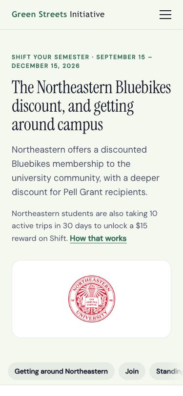
School pageSpaced-caps label, serif headline, a university seal. The Join button is below the screen.
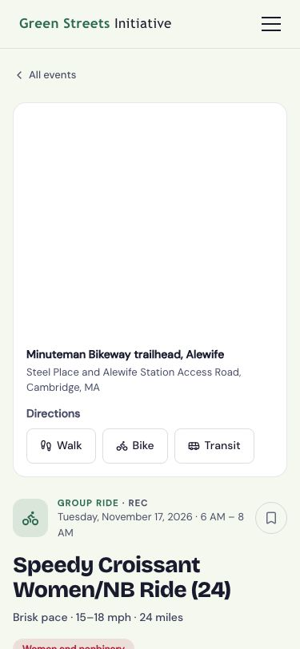
Event pageA blank box where the map loads. The title is below the fold.
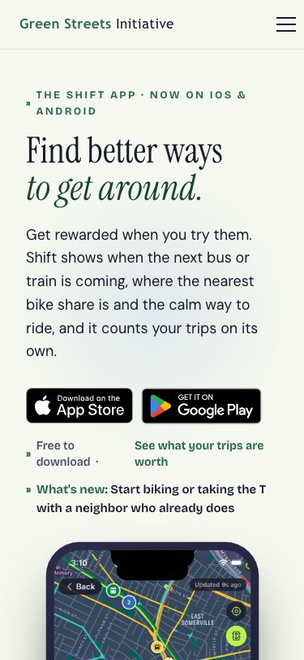
/shiftItalic serif, "the calm way to ride", a phone mock-up. Store buttons do work here.
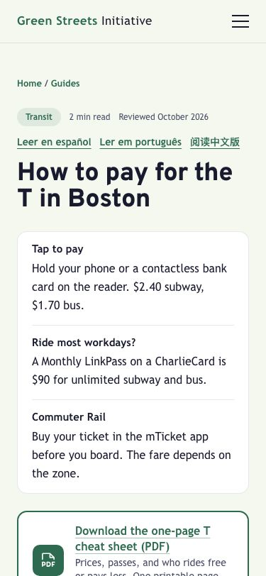
T guideThe best page we have: answers right away, real prices. Converts at 11%.
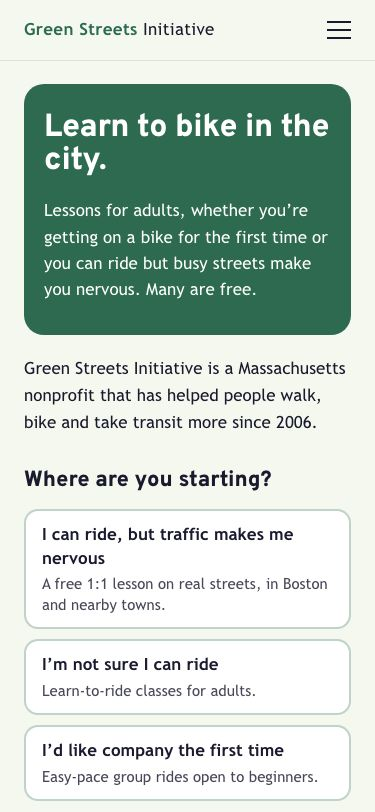
/bike-lessonsClear choices, but no photo of a lesson or a person. 1.4% ask.
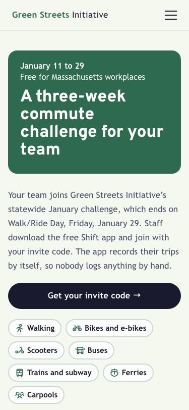
Employer challengeSells auto-tracking ("nobody logs anything") and mode chips. 0.5%.
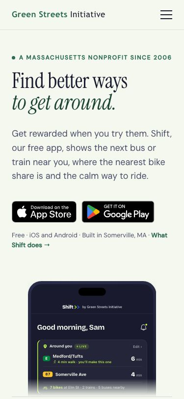
HomeSerif italic headline and app mock-up. Under 6% of visitors.
Findings, costliest first
Tags are your seven criteria: clarity, visual-to-text, ease, paths, borrowing, design language, measurement.
The first phone screen of our biggest pages doesn't do its job
Event pages (1,212 landings, our top Google page, 403 URLs) open on an empty map box. School pages hide Join below the screen. On /shift and the school pages most people never scroll.
Fix: every landing page shows what, when, where and one button on the first phone screen. Maps and long text go below.
clarityease
Paid ads land on pages that return almost nothing
/bike-lessons (461 sessions from the November lessons ads) converts at 1.4%. The employer challenge page converts at 0.5% with an 8-second visit.
Fix: lessons page leads with a photo of a real lesson and one ask. Employer page leads with what a team gets and "Book a call", with the invite code second.
pathsmeasurement
Almost no pictures of real places and people
12% of events have an image, trails and guides have almost no photos of their own, and landing pages show seals and phone mock-ups. Some photos show the wrong place: the Fresh Pond walk listing shows Public Garden tulips.
Fix: use the host's photo, then a credited Commons photo of the place (as in the mock-ups), then a drawn map. With none, show the place name and map. Never a stand-in photo.
visual-to-textdesign language
It looks like a Claude site
Italic serif accent words ("to get around."), spaced-caps labels on nearly every page, dotted rails, rows of three stat tiles, phone mock-up heroes. Four looks mixed: cream serif, street-sign panels on lessons, parking and links, Shift navy and lime blocks, a blue Shift button on employers.
Fix: one direction for the whole site, and retire the serif, the spaced caps and the phone-mock-up hero everywhere.
design language
The event listings show messy data, including private addresses
Two live listings show a private home address ("Mary's house", Cambridge). Saturday's "Lizzie Learns to Ride" reading is listed twice. The Truant Thursday ride moved to the 19th but its link still says the 12th. 75 of 284 listings put a street address where the place name goes. Hidden copies and drafts, a home address with a unit number among them, can still be read through the site's public data connection. (Corrected: my first count included hidden rows; the site shows Butternut, Cafe Bikers, Fresh Pond and DotBike once each.)
Fix: show the neighborhood, not a home address, until people sign up; merge listings with the same host, date and time; keep the place name and the street address in separate fields; close hidden rows to the public. The events-data session is doing these now.
clarityease
Four "how do I get there" tools, split up
/trip, /nearby, /commute-advisor and /visiting each answer part of it. Nav splits them between the top bar and the Shift app menu. /visiting is linked from nowhere and hidden from search.
Fix: one "Get there" door, with the four as tabs or starting questions.
pathsease
Our best first-try pages are hidden
/bike-lessons and /together are the strongest pages for someone trying something new, and neither is in the nav, the footer or the home page.
Fix: a "Learn to ride" door in the nav, and a link from every easy-pace event.
paths
Copy breaks our own rules
Em-dashes everywhere (38 on the Somerville page). "The calm way to ride", "Discover nearby", "Perks unlock here". The employers page shows a price ($500 to $5,000) with no "Book a call". The schools page leads with what we don't do. Rewards partners and Get involved still sell the retired discount model. Programs says "every last Friday", Walk/Ride Day says "one Friday a month". Several pages pitch auto-tracking as the reason to join.
Fix: a copy pass on these pages, independent of design. List below.
Fix: one sentence per card, numbers as meters and maps, details behind "How it works".
visual-to-text
Organizations have no front door
The nav offers only "Employer login". Three employer pitches overlap. Ride organizers have no public landing; the town challenge page is not live.
Fix: one "For organizations" door: employers, schools, towns, organizers, local shops.
paths
We can't measure the pages that matter most
Employer sign-up, contact, newsletter and lesson alerts go only to Google Analytics; donations are measured nowhere. Raw PostHog counts are 1.7 times too high. The "home button" event fires mostly on the semester page.
Fix before any redesign ships: named PostHog events for each sign-up, a bot and staff filter, then two weeks of baseline.
measurement
Dead ends and leftovers
The press kit PDF is a 404. Sponsor pages have no Donate button. Shift Your Summer (ended) still has six pages and /offers sends people into it.
Fix: archive the ended campaign to one page; fix or remove the press kit.
paths
Every key page, scored
1 to 5 on your seven criteria, today. Ordered by visitors.
Page
Visitors 90d
Clarity
Visual
Ease
Paths
Borrowing
Look
Measured
School pages
1,283
3
1
3
2
2
2
4
/shift
1,110
3
2
4
3
2
2
4
Event page
1,074
2
1
3
3
2
3
4
/events
658
3
2
3
3
3
2
3
T guide
464
5
2
5
4
4
3
4
/bike-lessons
441
4
1
4
2
3
2
2
Home
362
3
2
3
3
2
2
2
Employer challenge
182
3
1
3
1
2
3
1
Town pages
149
2
3
2
3
2
2
3
Bright spots worth copying: the T guide (answer first), the Minuteman trail page (photo plus three numbers), /together (a credited real photo), the Fenway parking page (real prices).
Who the site is for
Persona ids from the Shift personas list, the job each one comes to do, and where the site serves it.
Persona
Job
Pages
Today
event-goer
Get to an event
/events, event and host pages, parking
Busiest door, weak first screen
student
Get around campus cheaply
Semester hub, 13 school pages
Top traffic, Join below the fold
first-timer
Try biking or transit without feeling lost
/bike-lessons, /together, easy events
Strong pages, hidden
new-mover, fed-up-commuter
Find a better way for a trip
/trip, /nearby, /commute-advisor, guides
Split across four tools
trail-seeker
Find a walk or ride and reach its start
/trails, Roams, town trails
Good, two hubs, no photos
help-getting-around
Use the fares and help they qualify for
T guide only
No page
visitor
A few days in Boston
/visiting (built, hidden)
No live page
family
Get kids where they need to go
School pages aimed at champions
Nothing for parents
cost-weigher, delivery-courier, creator
Spend well; earn on a legal vehicle; make something
none
No page
employer-buyer
Meet a commute goal, show it worked
Three overlapping pitches
Nav says "Employer login" only
ride-organizer, town-staff
More people show up; residents move and it's reported
Invite-only kit; town challenge not live
No public door
school-champion, local-shop
Run a program; win customers
/shift/schools; rewards partners
Fair; partners page sells the retired model
The site map today
183 page routes, 110 public, 505 URLs in the sitemap. Red: linked from nowhere. Yellow: dead end.
flowchart LR
ADS["Paid ads, 56% of visits"] --> SHIFT["/shift"]
ADS --> SCHOOL["School pages"]
ADS --> LESS["/bike-lessons"]
ADS --> EMP["Employer challenge"]
ADS --> TG["T guide"]
GOOGLE["Google search"] --> EVD["Event pages"]
GOOGLE --> TG
HOME["Home, under 6%"] --> EV["/events"]
HOME --> TOWNS["Town pages"]
EV --> EVD
EVD --> HOST["Host's sign-up"]
SHIFT --> STORE["App store"]
SCHOOL --> JOIN["Join"]
LESS --> TOGE["/together, not in nav"]
NAVAPP["Shift app menu"] --> NEAR["/nearby"]
NAVAPP --> ADV["Commute Advisor"]
NAVTOP["Top nav"] --> TRIP["/trip"]
VISIT["/visiting"]:::orphan
OFFERS["/offers, ended campaign"]:::dead
PRESS["Press kit, 404"]:::dead
classDef orphan fill:#fde2e2,stroke:#b4432f,color:#191A2E
classDef dead fill:#fff3cd,stroke:#b7791f,color:#191A2E
Four trip tools sit in two different menus. Full inventory, redirects and every orphan: docs/design-review-2026-11/inventory.md.
Three directions
Same two pages in each: home, and the event page (the event-goer's page and our biggest Google door). Same real ride: Boston Cafe Bikers' Saturday 10 AM ride from Union Square to Butternut Bakehouse (the mock-ups use the host's own title for it, Better Not Miss Butternut). Same fonts and colors, so you're judging the idea, not a palette. Photos are real and credited.
A
What's on near you
A listings site like Luma or Airbnb: pick a day and a town, see real rides, walks and classes with photos, go.
Borrowed from: Luma (date tiles), Airbnb (rows named after places), Google Maps "Latest in this area", AllTrails (place cards with three numbers).
What's onPlacesGet thereLearn to rideFor organizationsGet Shift
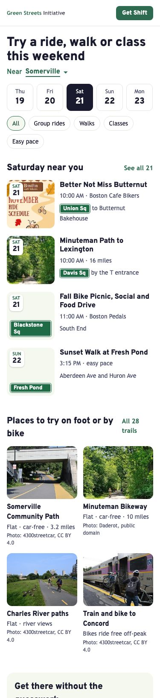
Home
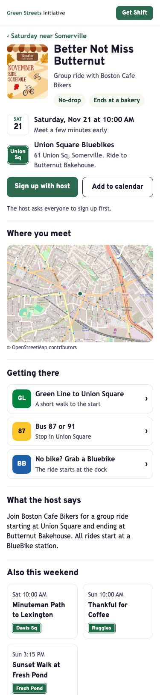
Event page
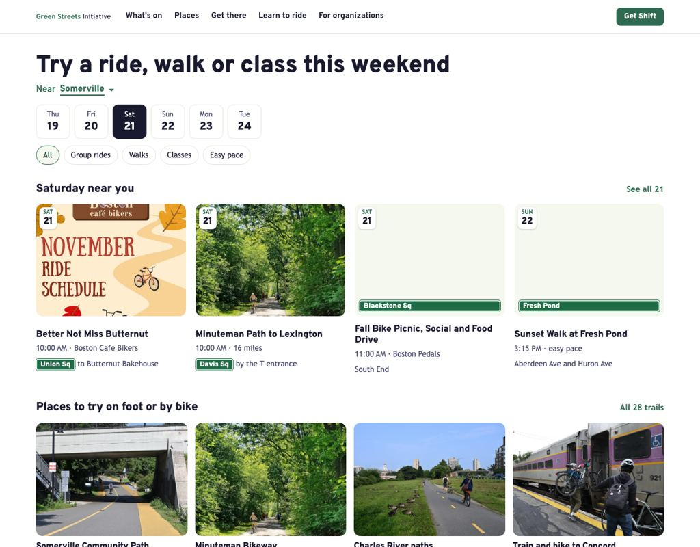
Home
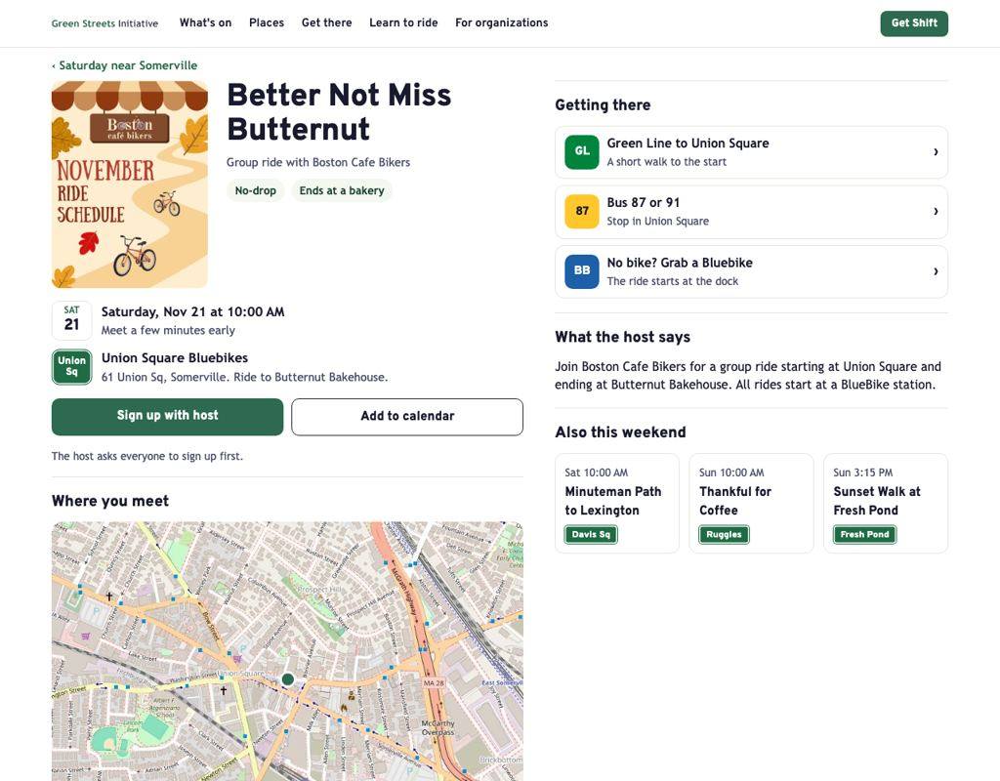
Event page
Fixes the street sign by shrinking it to a place-name blade (Union Sq, Davis Sq) beside photos and date tiles. It never holds a headline.
Takes: a date-tile card, a place blade, rebuilt /events, event page and home; merging duplicate listings; a place photo for about 60 meeting spots. About three weeks of build.
Measure: event page sign-up and calendar saves (11.2% today), /events to event click-through, school page Join rate.
Risk: can look like any events app if photos stay thin.
B
A field guide by neighbors
A magazine about our streets: big credited photos of real places, hosts and their own words, each section laid out differently.
Borrowed from: Exhibition Magazine (credits, varied layouts), CQCM (portrait plus a solid block with one sentence and one button), Atlas Obscura, Rivian.
What's onPlacesRide alongLearn to rideWork with usDonate
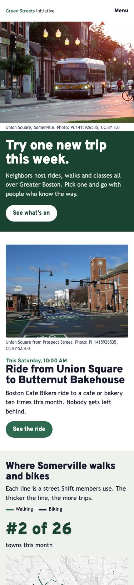
Home
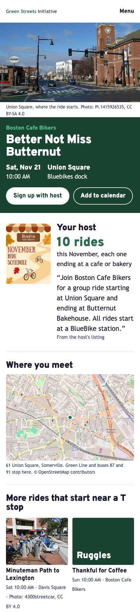
Event page
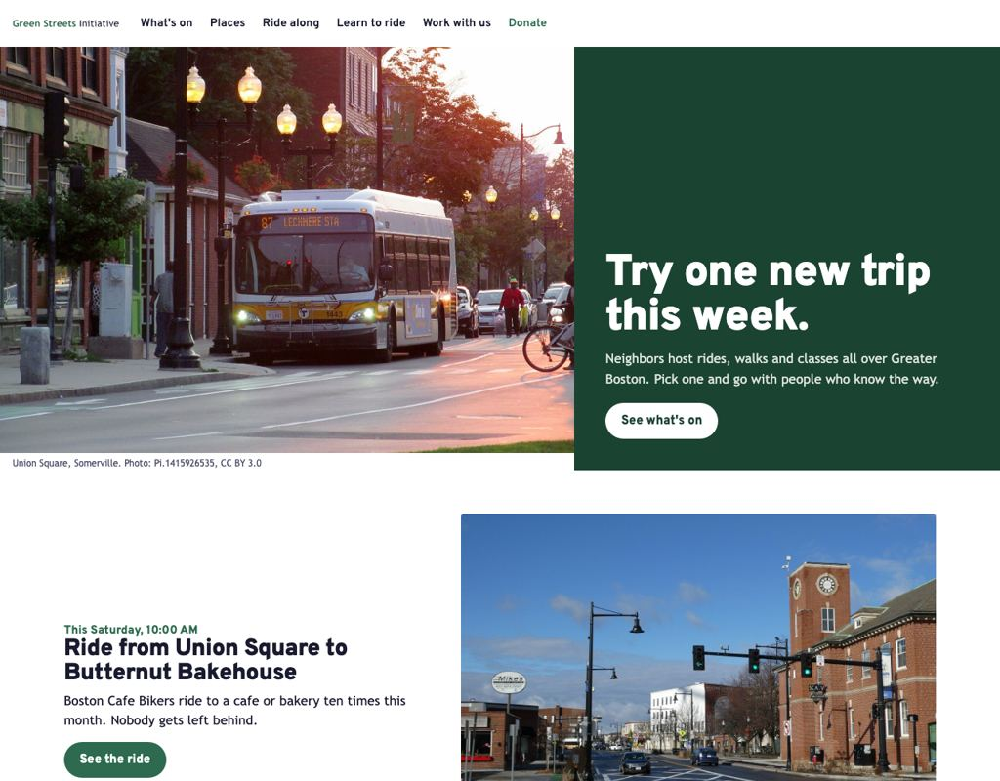
Home
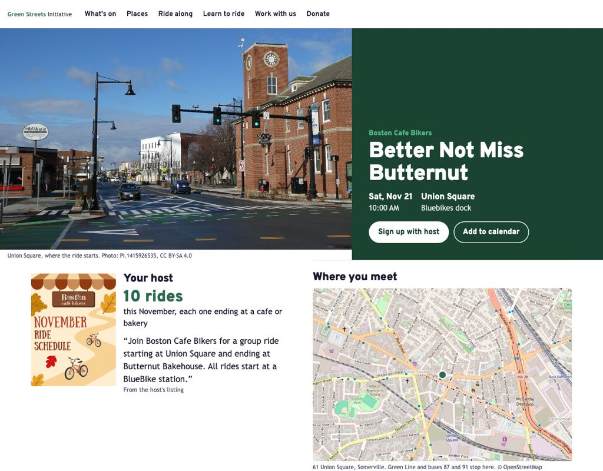
Event page
Fixes the street sign by dropping it: solid green blocks carry the words, photos carry the page.
Takes: the most photos. Every town, trail and host needs a real picture; Photo of the Month and the designer's shot list feed it. Host quotes need their OK. About three weeks of build plus ongoing photo work.
Measure: town page to app (6.3% today), time and scroll on place pages, share of pages with a real photo.
Risk: slower to act on. The event page puts the place before the buttons.
C
Street wayfinding, fixed
A trip tool first: "Where are you headed?", then guide signs as the doors and a T-map line from the station to the start.
Borrowed from: Uber (task-first hero), MBTA line maps, GOV.UK (answer first, like our T guide), Ecosia (live numbers), Cowboy ("Book a test ride").
Plan a tripRides and walksLearn to rideYour townFor organizationsGet Shift
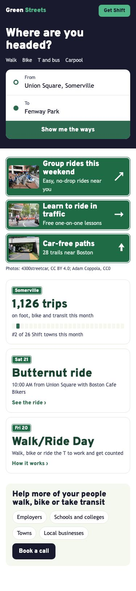
Home
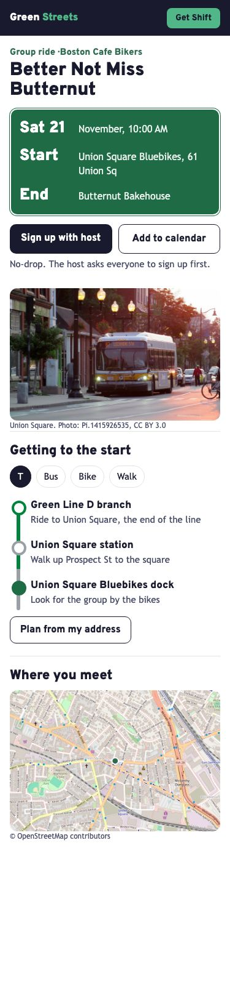
Event page
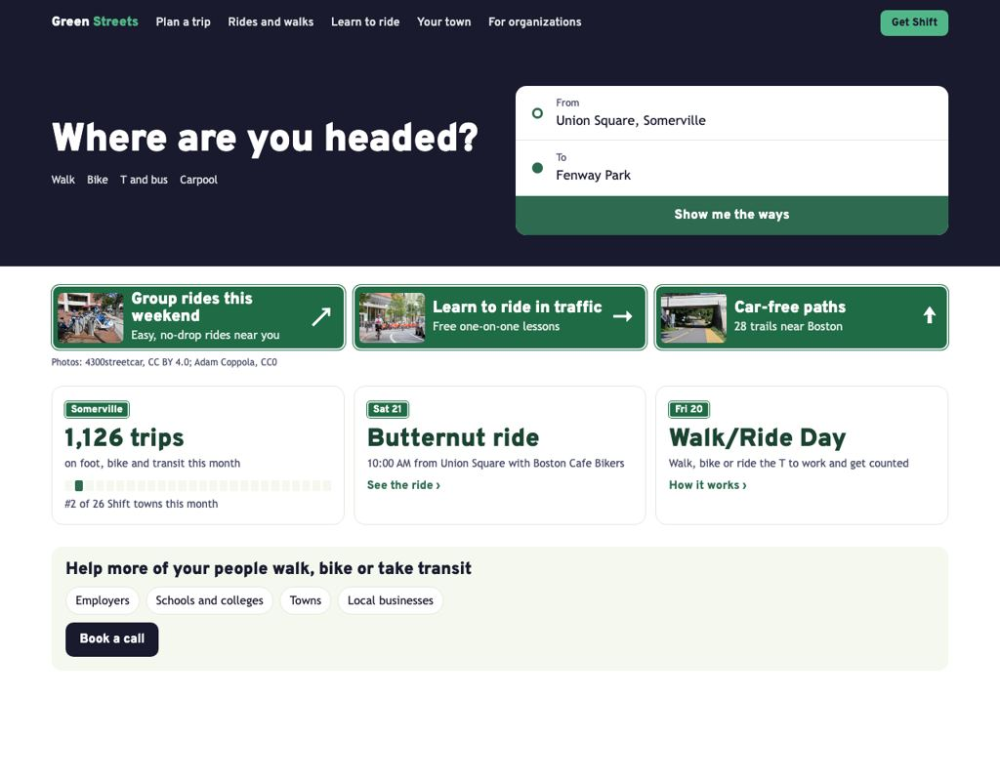
Home
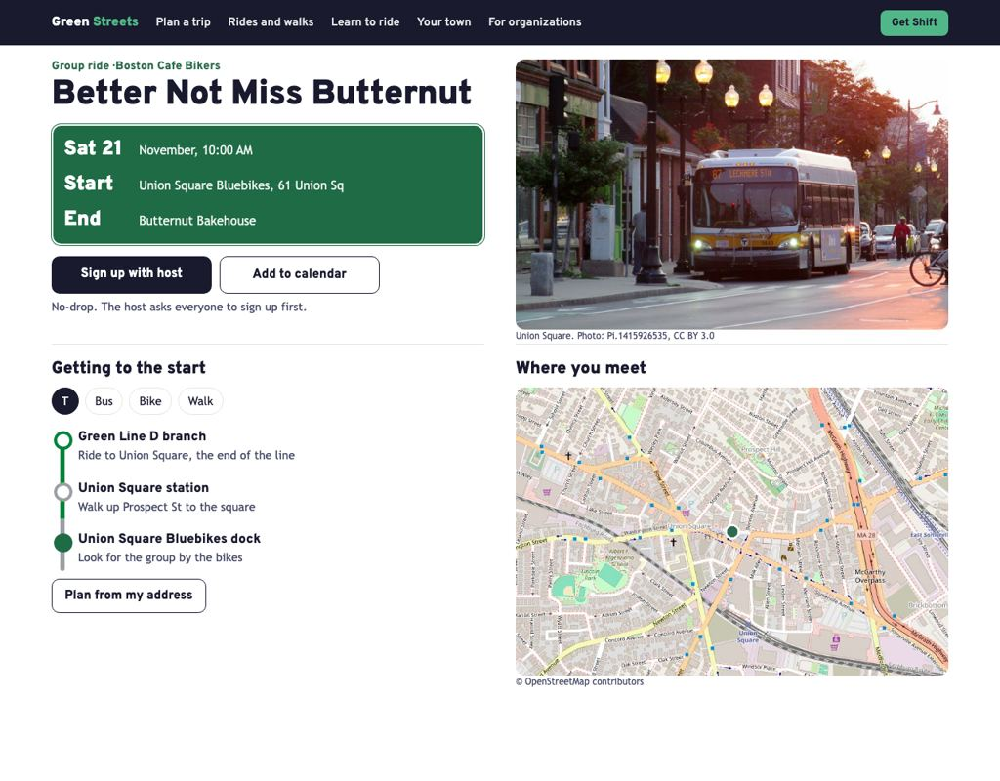
Event page
Fixes the street sign by giving it a hierarchy: one big task on top, three photo signs as doors, small blades for places, ranks drawn as strips.
Takes: the least new content. /trip exists; needs a line-diagram piece and sign cards. About two weeks of build.
Measure: trip plans finished, "Plan from my address" taps, lessons requests from the sign door.
Risk: closest to the look you turned down on Oct 17. Home becomes a tool, which suits returning visitors more than first-timers.
Scores against today
Home and event page together, 1 to 5. Directions are scored from the mock-ups.
Clarity
Visual
Ease
Paths
Borrowing
Look
Measured
Today
2.5
1.5
3
3
2
2
3
A What's on
5
4
5
5
5
3
5
B Field guide
4
5
3
4
4
5
3
C Wayfinding
5
3
5
4
4
4
5
My pick: A for the pages people land on, with B's photos on place pages
A wins where the traffic is. Event pages, /events, school pages and /shift are all "pick something and go", and A puts the thing, the time, the place and the button on the first phone screen. B is what makes it look like GSI and nobody else: credited photos of Union Square and the Community Path, hosts named, maps drawn from our own trips. Use B's treatment on town, trail and Roam pages, where people come to look. Take C's "Getting to the start" line from the T stop into A's event page.
This also fits the designer brief: hand A and B to the designer as the two event-page directions due Dec 1, with these mock-ups and photos as the starting point.
Fixes that don't wait for a direction
Copy, data and tracking. Say yes and I'll do them in their own change.
Hide home addresses and merge duplicate events. "Mary's house" on two listings, Lizzie Learns to Ride twice, the old date in Truant Thursday's link. The events-data session already has these in hand.
Named PostHog events for employer sign-up, contact, newsletter, lesson alerts and donations, plus a bot and staff filter, so the redesign has a baseline.
Employers page: remove the price, make "Book a call" the button. Schools: drop the "No apps, no accounts, no data" opener. Rewards partners and Get involved: stop selling discount listings.
Wording: remove em-dashes on the ten worst pages, "calm way to ride", "Discover", "unlock", the auto-tracking pitches; make Walk/Ride Day's day the same on both pages.
Put /bike-lessons and /together in the nav and footer. Fix the press kit link. Fold Shift Your Summer into one archive page.
Proposed design-rule edits
For Shift/docs/programs/design/system.md. Pick any; nothing changes until you do.
1. First phone screen (new, in section 6 Clarity). "Every website page that people land on shows what it is, when and where, and one button on the first phone screen. Maps, long text and the rest go below."
2. The green sign on the website (section 2, The green street sign). Add: "On the website it is a place-name blade (a square, a station, a trailhead) or a door sign with a photo. It never holds a page headline or a paragraph."
3. No stand-in photos (section 5, Photo rules). Add: "A listing without a photo of its own place shows the place name and a map. A host's default group image that shows another place is not used."
4. Website surface status (section 9). Replace the gogreenstreets.org row's look with the direction you pick, and add: "Retired on the site: Instrument Serif, italic accent words, spaced-caps labels, phone mock-up heroes."
How I did this. Read the design rules, plain words, personas, the Oct 17 and Nov 4 to 5 notes and the designer brief. Screenshotted 32 live pages at desktop and phone width. Pulled 90 days of PostHog (bots, our own visits and foreign crawlers removed, 43% of raw views) and the latest Search Console week. Compared against 25 real sites in UXKIN. Mock-ups use this weekend's real listings, credited Wikimedia Commons photos, OpenStreetMap and Shift trip data for Somerville.
Not checked: how the mock-ups read in Spanish, Portuguese and Chinese; screen readers; page speed.
Working files in the gsi-website repo, docs/design-review-2026-11/: inventory.md, traffic.md, references.md, findings.md, shots/, mock/.